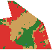

1. aday
16-0030
Baskın arazi sınıfı: Yapılaşmış alan
Yapılaşmış
%45.64
Bitkisel / yeşil
%22.73
Açık / çıplak
%31.54
Su / sulak alan
%0.09
- En yakın kütüphane
- Gülten Akın Kütüphanesi
- Kütüphaneye uzaklık
- 6.87 km
- WorldCover kapsaması
- %100.00
- Aday hücre alanı
- 0.3441 km²